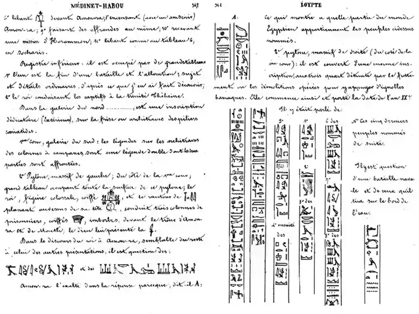

The record
The Sea Peoples appear in Egyptian texts from the reign of Merneptah (c. 1208 BC) and, most fully, in the inscriptions and reliefs of Ramesses III at Medinet Habu (c. 1177 BC). They are named as a coalition: Peleset, Tjekker, Shekelesh, Denyen, Weshesh, Sherden and others. The texts describe a war by land and sea, and a defeat.
Maps, diagrams and images


The same period saw the collapse of the Hittite empire, the destruction of Ugarit, and the end of Mycenaean palace society. The Sea Peoples are one thread in the wider Bronze Age collapse — not the whole explanation, and probably not the cause.
The competing answers
The Peleset are widely identified with the Philistines, who appear in the Levant shortly afterwards, which supports an Aegean or Anatolian origin for at least that group. The Sherden and Shekelesh have been linked, on linguistic grounds, to Sardinia and Sicily — a link that is suggestive and contested. Others may be Anatolian, or displaced populations from the collapsed states.
The honest position is that the Egyptian texts give names, not addresses. There is no settlement, no cemetery and no material culture that can be pinned to the coalition as a whole.
Documented: the coalition, its named groups, and the Egyptian campaigns against it.
Documented: the contemporaneous collapse of several eastern Mediterranean states.
Likely: that the Peleset are the Philistines, and that migration was involved.
Contested: the origins of the other groups, and whether 'Sea Peoples' describes one movement or several.
The honest label: live debate, with the evidence for origins thin and the evidence for the events good.
Why it is in the archive
Because it is a genuine historical mystery that has been recruited for claims about Atlantis, and because the archive wants at least one page where the honest answer is 'we know the names and not the places'.
Open resources on this topic
- PapersOpen-access articles: DOAJ · PubMed Central · Internet Archive Scholar
- BooksPublic-domain and borrowable copies: Open Library · Project Gutenberg · Google Books · Internet Archive
More images
Cite this page
Momin, S. (2026). Who Were the Sea Peoples?. The Larger World Archive. https://drsamonline.github.io/LARGE_GLOBE/sea-peoples.htmlMomin, Sohil. “Who Were the Sea Peoples?.” The Larger World Archive, 2026, https://drsamonline.github.io/LARGE_GLOBE/sea-peoples.html.Momin, Sohil. “Who Were the Sea Peoples?.” The Larger World Archive, 2026. https://drsamonline.github.io/LARGE_GLOBE/sea-peoples.html.@misc{who2026sea,
author = {Momin, Sohil},
title = {Who Were the Sea Peoples?},
year = {2026},
howpublished = {The Larger World Archive},
url = {https://drsamonline.github.io/LARGE_GLOBE/sea-peoples.html},
note = {Last reviewed 20 November 2026}
}Last reviewed 20 November 2026 · Corrections policy · this page is not peer reviewed
Sources for this page
- Wikipedia, “Sea Peoples” — the texts, the groups and the theoriesen.wikipedia.org
- Wikipedia, “Late Bronze Age collapse” — the wider eventen.wikipedia.org
- Wikipedia, “Medinet Habu” — where the inscriptions areen.wikipedia.org
- Wikipedia, “Philistines” — the group most likely identifieden.wikipedia.org